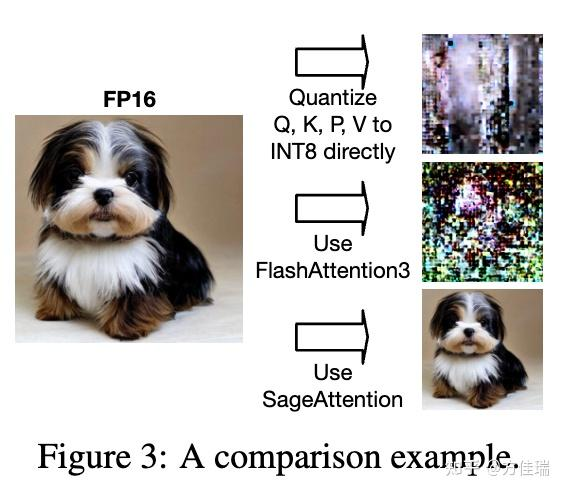
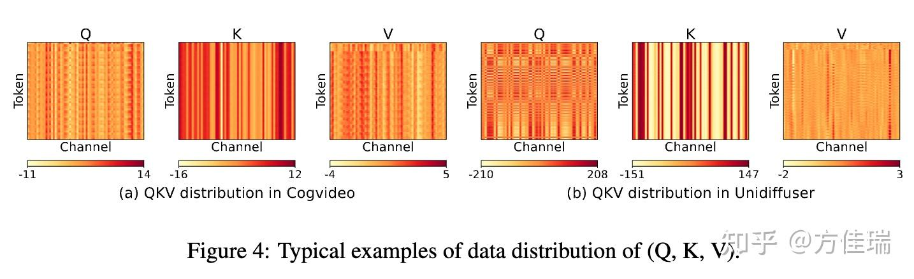
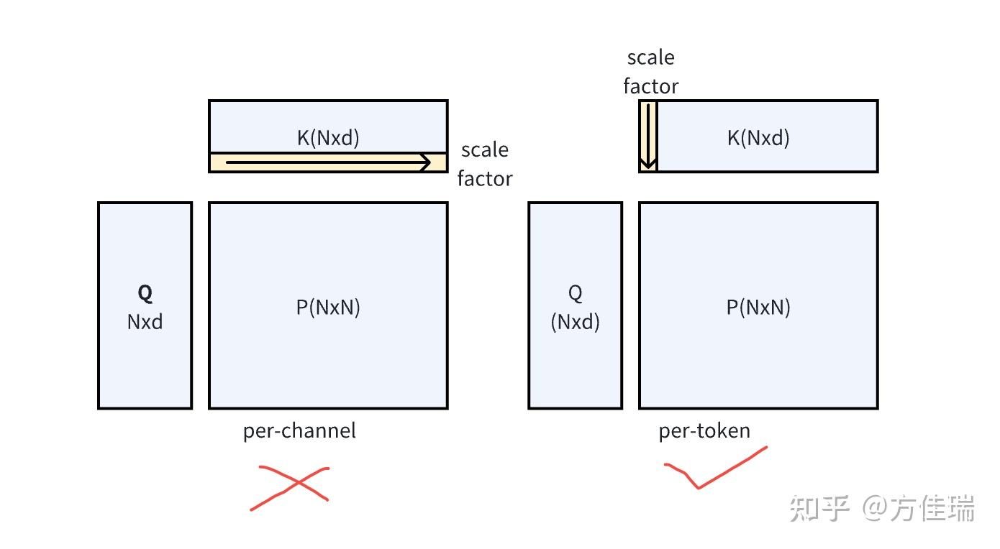
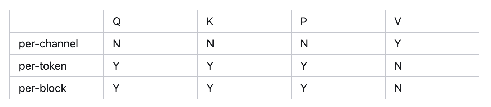
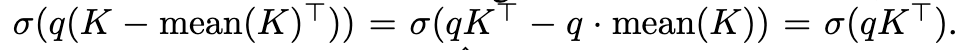
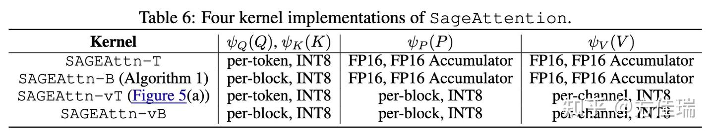

作者：方佳瑞
https://zhuanlan.zhihu.com/p/1895945361824122028
LLM 的量化加速是近两年的热点话题，老方法过江之鲫，新文章层出不穷。然而，过往的研究焦点大多集中于对模型中的Linear 层进行量化。尤其是在 LLM 推理的decode阶段，如 GPTQ 和 AWQ 等仅权重量化（weight-only quantization），SmoothQuant 等 激活权重协同量化（weight-activation quantization），其目标在于减少模型的显存消耗、降低访存带宽需求、利用低精度提升硬件 flops峰值。相比之下，对于长序列Attention的量化研究则相对匮乏。
O1 等技术的出现使得 LLM 可以处理更长的序列，和Sora这种计算密集的 DiT 模型兴起，Attention在推理过程中所占用的时间比例变得愈发突出。然而，鲜有量化工作专门针对注意力机制的优化设计。这是因为相比于线性层，注意力机制的计算复杂度高达 O(N²)，在处理长序列时会成为主要的性能瓶颈。
在这样的背景下，SageAttention 出现了。它是较早系统性地研究并提出注意力机制量化方法的开源项目之一。更关键的是，SageAttention 是开源的，使用起来很方便，能直接替换原来 fp16/bf16 的注意力实现。这篇相关论文在 2024 年 10 月首次发布，在用于 DiT 推理的 ComfyUI 社区里已经显示出了很大的潜力。随着 PD 分离架构越来越流行，SageAttention 在LLM Prefill 阶段的应用也会越来越多。
本文将介绍 8 bit 量化版本的 SageAttention V1，这也是目前开源实现最完善的版本。笔者也是在 SageAttention 开源第一时间就关注到这个工作，见证了 SageAttention 从最开始基于 Triton 的版本，迭代升级到了 CUDA 的版本。 SageAttention有两个续集，INT4 量化的 SageAttention2 和 稀疏化的 SpargeAttn。int4 v2 版本尚未开源，而 SpargeAttn 目前使用方式比较复杂，不过相信后面在开源体验上会有所改善，这两个工作我们先按下不表。
SageAttention: Accurate 8-Bit Attention for Plug-and-play Inference Acceleration
https://arxiv.org/pdf/2410.02367#page=1.74
SageAttention2: Efficient Attention with Thorough Outlier Smoothing and Per-thread INT4 Quantization
https://arxiv.org/abs/2411.10958
SpargeAttn: Accurate Sparse Attention Accelerating Any Model Inference
https://arxiv.org/abs/2502.18137Why not FlashAttention v3？
2024 年上半年 FlashAttentionV3 开始使用支持 Hopper 架构的 FP8 Attention 计算，但是使用 FAV3 的 FP8 计算会出现精度损失。Figure 3 展示了 Unidiffuser 模型在直接 INT8 或 FlashAttention3 的 FP8 量化下生成模糊图像的失败案例。

而在非 Hopper 架构上，直接将注意力机制中的查询（Q）、键（K）、值（V）以及概率（P）矩阵进行 INT8 量化也并不简单。在使用 INT8 量化 Attention 后，LLaMA2 在 MMLU 基准测试上的准确率仅为 25.5%，这与随机猜测的水平相当。
那么，导致 INT8 量化精度大幅下降的“罪魁祸首”究竟是什么呢？SageAttention 又是如何解决的呢？
Sageattention 实现基于 FlashAttention（FA），FA 实现细节也是SageAttention 阅读一大门槛。 FA的基本原理请移步如下文章，自认为讲的比较通俗易懂的。
FlashAttention算法之美：极简推导版
https://zhuanlan.zhihu.com/p/4264163756GEMM Quantization
量化是一种通过降低数值精度来提高神经网络计算和内存效率的有效策略。按照量化精度可以分为 INT8，FP8，INT4，FP4 等量化方法。按照量化粒度，即多多大数据共享同一个缩放因子，可以分为per-channel，per-token，per-block，per-tensor 等量化方法。以下是几种常见的量化粒度：
Per-tensor 量化：这是最粗粒度的量化方式。对整个 tensor 计算出一个统一的缩放因子（scale factor），然后将张量中的所有元素都使用这个缩放因子量化到低精度格式，例如 INT8。例如，一个 INT8 的 per-tensor 动态量化器会找到整个张量的最大绝对值，以此计算出一个缩放因子，然后将所有元素缩放到 INT8 的表示范围内 [-127, +127] 并进行取整1 。
Per-token 量化：这种量化方式的粒度比 per-tensor 更细。对于张量的每一个 token（通常指的是矩阵的每一行），都单独计算并应用一个缩放因子。
Per-block 量化：这种量化方式的粒度比 Per-token 更细。它将张量在 token 维度上划分为若干个块（block）。对于每一个块内的所有 token（行），计算出一个统一的缩放因子并应用，。
Per-channel 量化：这种量化方式和 per-token 类似，但是量化维度不一样，对于张量的每一个通道（通常指 hidden dim 维度的一列），都单独计算并应用一个缩放因子。
离群值（Outliers） 的存在是模型量化时精度下降的主要原因。这是因为量化将模型中的连续数值映射到有限的离散数值范围（例如 INT4 的范围是 [-7, +7]）。如果数据中存在少数数值远超其他数据的离群值，为了表示这些极端的数值，量化的步长（resolution）就需要增大。
这样做的直接后果是：
大多数正常的、幅度较小的数值在量化后会变得非常接近甚至等于零。例如，如果一个数值比组内的最大值小很多倍，它可能会被量化为零，导致大量信息的丢失。
有限的量化比特无法精确表示这些大部分的正常数值，从而降低了整体的量化精度。
为了解决这个问题，需要采用平滑（smoothing）技术来减小激活或权重中离群值的影响，使得数值的幅度分布更加均匀。量化方法通过观察任务的 outliner 特点，来针对性地设计量化方法。
比较有代表性的是SmoothQuant ，它观察到在LLM的推理过程中，激活值（activations）中往往比权重值（weights）更容易出现显著的离群值。SmoothQuant 通过一种数学上等价的Per-channel缩放（channel-wise scaling）操作，将模型量化的难度从激活转移到权重。具体来说，它降低了激活中异常大的数值，使得激活值更容易被量化到低比特（例如 INT8），从而在保持模型精度的前提下，实现更高效的量化推理。
Attention 中的离群值特点
Linear 层量化的难点是对离群值（outliner）处理，Attention也不例外。本文首先分析了 Q、K、V 离群值的特点。如Figure 4 所示，K 矩阵红色条纹很深，表现出显著的channel-wise outlier，这是造成量化过程中巨大精度损失的主要原因之一。

为何不可 Per-channel 量化 Matrix K？
如何消除K 的 channel-wise outlier？很朴实的一个想法是对 K 做 channel-wise 量化，这样就避免不同 channel 之间的值共享scale factor。很遗憾，在 Attention 计算中你不能这样做！
这是因为在进行矩阵乘法 QK^T 后，得到的结果矩阵的维度是 N × N（Q 和 K 的维度都是 N × d）。如果我们对 K 进行了per-channel 量化（下图左边，总共 d 个channel，每个 channel 包含 N 个元素），每个通道都有一个独立的scale factor，总共是 d 个 scale factor。在反量化（dequantization）时，我们需要将量化后的结果乘以对应的scale factor，而QK^T 的结果矩阵的维度是 NxN，根本没有 d 的通道维度不直接对应，因此无法使用 K 的通道维度的缩放因子进行正确的反量化。

简而言之，矩阵乘法中，对于每个矩阵你只能沿着公共维度进行量化（下图右边）。根据这个简单的原则，Attention 中四个矩阵可以量化的组合如下。注意能做 per-token，就能做 per-block 量化。

表 1：QKVP 可行的量化粒度
Smooth Matrix K
既然我们只能对 K 进行逐 token 量化，那怎样消除离群值呢？首先，计算矩阵 K 每个通道在 token 维度上的平均值 mean(K)。这个平均值是一个形状为 1 × d 的向量。接着，从原始的矩阵 K 里减去这个平均值。这个操作可以用公式表示为 γ(K)=K−mean(K) ，原文把这称为平滑矩阵 K。
这样做和原始的注意力计算在数值上完全一样。不管 K 有没有减去它的平均值，Q 和 K 做点积，再经过 softmax 归一化后的结果是一样的。这里利用了 softmax 的特性，给 softmax 的输入加上或减去一个常数向量，结果不会变。有一个经典的机器学习面试题问为什么 softmax 计算时要从输入数组里减去最大值，也是利用了这个特性。

至于为什么减去 mean(K)之后， K 矩阵就没有离群值了呢？原文说：the channel outliers of K have a pattern: Each token’s key is actually a large bias shared by all tokens, plus a small token-wise signal。也就是说，K 的每个通道一开始都有一个很大的偏差值，通道里的元素波动很小。这是本文基于经验的说法，我试图找一些其他能相互印证本观点的文献，更严谨的做法应该是找几个任务来验证这个结论。 用均值做Smoothing思想是很实用的，在 SageAttention V2的 INT4 量化时，对 Q 也做了 Smooth 处理，同样利用了 Softmax 的性质。
组合量化粒度和精度
有了消除 K 矩阵离群值的方法，剩下就是对 Q、K、P、V 矩阵量化粒度、data type 的组合。 矩阵可以选择的量化粒度见表 1。
Q 和 K data type 都是 INT8，作者认为 INT8 精度相比 FP8 更高，并且在 A100 等架构上也能用。
P 可以选择用 FP16 来累加，也可以选择 per-block 方式的INT8 量化。为什么不用 per-channel，因为 per-block 更容易和 FlashAttention 的分块实现结合。用 FP16 而不用 FP32，因为 4090 上 FP16 峰值是 FP32 累加的 2x，这也是 4090 的一个超级buff。
同样 V 可选择 per-channel-INT8 和 FP16 。
上述排列组合下来，论文最后实现了下面 4 个 kernel。

最后论文还介绍了一些其他技巧，把 ROPE 和 Q 的量化可以融合起来等，但这些开源代码没有放进去。
总结
SageAttention 是和 FlashAttention 类似的工具，主打即插即用，使用起来很方便，对 DiT 和大语言模型（LLM）的 Prefill 阶段特别有效。它在计算精度和速度上优势明显，甚至可以水变油，在进行 Attention 计算时，让 4090 显卡发挥出 H100 显卡的性能。
本文的关键发现在于处理 Attention 里 K 离群值的特点，运用“平滑 K 矩阵”（Smooth K Matrix）这个方法保证了计算精度。作者对量化粒度和数据类型进行不同组合，提出了四种 Attention 量化的实现方式。
最重要的是，SageAttention 的代码是开源的，用起来很方便，推荐大家尝试。
阅读 -- 次